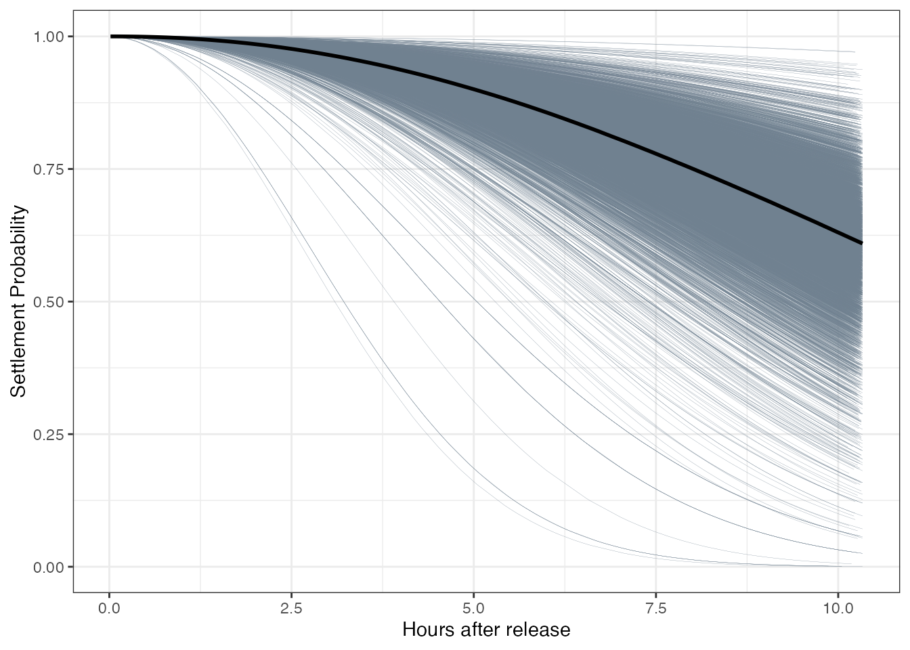
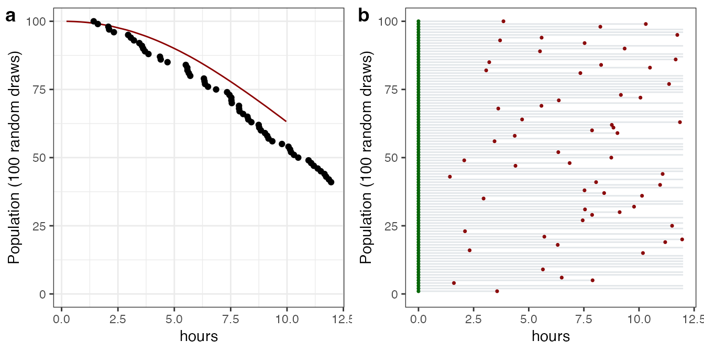
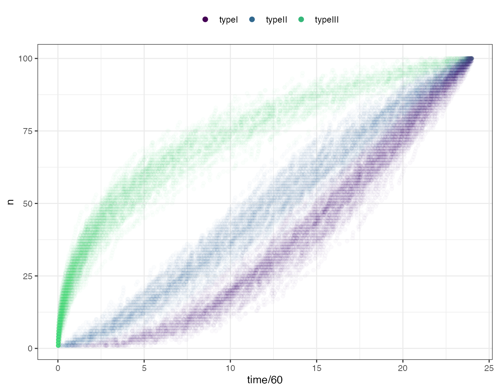
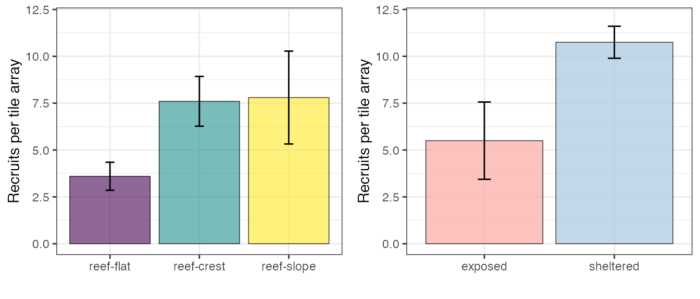

1. Theory and coral seed code
2023-08-23
01-code-coralseed-main.RmdIntroduction
coralseed is a spatially explicit probabilistic model
that attempts to quantify the spatial footprint of coral larval
re-seeding from restoration progjects. The model is based on
high-resolution oceanographic models (e.g. CONNIE) that allow for
tracking of individual particles following release through space and
time. By incorporating experimental data on larval behaviour
(competency, habitat specific substrate settlement preferences, swimming
behaviour) settlement probability can be modelled individually for
105 - 106 larvae. The temporal
dispersal-competency model is then overlaid onto high-resolution habitat
maps (Allen Coral Atlas)
forming a spatially-explicit probabilistic model of settlement following
release of coral larvae.
coralseed aims to provide insight into key knowledge
gaps in larval restoration: 1) Where do larvae settle following release?
2) What is the spatial footprint of larval reseeding projects? 3) what
are the likely densities of settled corals? 4) What densities of adult
corals (~10cm size) are produced from reseeding and where are they
located? By varying initial model parameters (e.g. tidal currents, time
of release, larval competency, larval densities, location of release
sites), a simulation modelling approach can be used to quantify the
likely spatial footprint and expected settlement densities, allowing for
optimisation and upscaling of larval reseeding programs on the Great
Barrier Reef and elsewhere.
coralseed model is formed from three main sections:
Probabilistic model of larval competency through time: the model is parameterised on fine-scale (hourly) data on coral settlement from wild-captured larvae cultured from the nGBR. The proportion of larvae settling through time is used to create a Bayesian probabilistic model of coral settlement in the early time period following release (0-12hrs), simulating a larval release on reef substrates.
Individual-based modelling of larval competency from dispersal models: the model leverages a high-resolution particle tracking model (CONNIE 3) that simulates particle releases from a point-source larval re-seeding project at Lizard Island (nGBR) in 2022. The model overlays the temporal trajectories from the probabilistic settlement model on spatial particle tracks to determine likely settlement times across dispersal trajectories.
Quantifying spatial mosaics of coral settlement potential from habitat maps: By combining high-resolution satellite-derived maps of coral habitats adjacent to release sites (https://allencoralatlas.org) with larval behaviour determined from experimental results on settlement preferences and habitat electivity (e.g. reef crest, reef slope),
coralseedcreates spatially explicit predictions of coral settlement across seascapes.
Below is the full code and data in R for
coralseed v0.0.0.9 with a (mostly) complete explanation of
how the model functions. coralseed is intended to be
flexible in terms of parameterisation, and can be generalised beyond the
current implementation. The document is in rmarkdown format
(Show / Hide buttons in each code section
expand code and details.
1. Probabilistic models of larval competency
In larval re-seeding programs, larvae are cultured (either in aquaculture facilities on land or within culture ponds at sea) and held until they reach optimal competency (usually determined by either i) adding n larvae to a tile and quantifying settlement after 10-24hrs, or ii) adding tiles to culture ponds and quantifying the proportion of larvae that settle after a 24hrs. Competency assays are repeated daily, and larvae are then released onto the reef after 3-6 days at peak of competency (i.e. highest number of settled larvae) to maximise the impact of larval reseeding.
coralseed defines competency as the duration of time
from release to settlement (from the perspective of larvae at are
n days old following fertilisation). This definition differs
from traditional studies of larval competency (e.g. Heyward
& Negri 1999, Connolly
& Baird 2010) and that derive larval competency as the
proportion of n larvae settling in a 24hr period across
multiple days. The distinction is important as coralseed
models competency as continuous (i.e. hourly measurements)
individual-based measures within a single cohort, while traditional
studies (and dispersal models) define discrete (daily) measures
across multiple cohorts.
To parameterise coralseed, we ran several experiments at
SeaSims and during coral spawning in the nGBR in 2022. The experiments
tracked settlement of replicated cohorts of larvae (n=100 per
replicate) at hourly timepoints (either 0 to 48hrs at SeaSims or 0-12hrs
with wild spawn). In all experiments, larvae were released into 1 litre
aquaria with a preconditioned settlement tile for substrate.
coralseed v0.1 uses the experimental results from
wild-captured coral larvae from Lizard Island in Dec 2022. Briefly, five
replicate pre-conditioned tiles were placed in individual 1 litre
through-flow aquaria (below left) to simulate natural conditions, and
100 larvae added to each container at t0. Tiles were imaged hourly
following larval release using a high-resolution camera (Sony a7R IV)
and in-water probe lens (Laowa 24mm) between t0-6 hrs and again at ~t10
hrs. The proportion of larvae settling through time was quantified by
tracking individual settlement through time (below right).

Experimental results
Quick summary of key results:
- Initial settlement is rapid and slows at around 2-3hrs.
- Settlement at 10hrs averaged 10 - 30%
- Settlement is increasing between 6 and 10hr time points (i.e. not reached an asymptote by 10hrs)
- Predicted settlement densities at 24hrs averaged ~ 0.9 settlers per cm2 of available substrate
Settlement densities were similar to field experiments after 24hrs (~1.0 settlers per cm2) at Lizard Island in Dec 2022 where 100k larvae were released into 1.5 * 1.5m net enclosures on the reef.
Show Code
### load data
library(tidyverse)
library(ggplot2)
library(ggpubr)
library(ggrepel)
df <- data.frame(
tile = c('16E', '16E', '16E', '16E', '16E', '16E', '16E', '16D', '16D', '16D', '16D', '16D', '16D', '16D', '16C', '16C', '16C', '16C', '16C', '16C', '16C', '16B', '16B', '16B', '16B', '16B', '16B', '16A', '16A', '16A', '16A', '16A', '16A'),
minutes = c(620, 360, 300, 255, 180, 120, 60, 620, 360, 300, 255, 180, 120, 60, 620, 360, 300, 255, 180, 120, 60, 620, 300, 255, 180, 120, 60, 620, 300, 255, 180, 120, 60),
count = c(22, 20, 16, 15, 12, 6, 4, 25, 23, 23, 22, 19, 16, 7, 28, 23, 21, 21, 17, 14, 6, 21, 12, 12, 9, 6, 2, 8, 7, 6, 6, 4, 2),
density = c(0.88, 0.80, 0.64, 0.60, 0.48, 0.24, 0.16, 1.00, 0.92, 0.92, 0.88, 0.76, 0.64, 0.28, 1.12, 0.92, 0.84, 0.84, 0.68, 0.56, 0.24, 0.84, 0.48, 0.48, 0.36, 0.24, 0.08, 0.32, 0.28, 0.24, 0.24, 0.16, 0.08)
) %>%
mutate(tile=as.factor(tile)) %>%
mutate(density=count/25) # divide the cumulative count by area of tile (5x5cm2).
a <- ggplot() + theme_bw() + ylim(0,100) + xlim(0,12) +
ylab("Number of larvae still swimming (not yet settled)") + xlab("Hours after release") +
geom_line(data=df, aes(x=minutes/60, y=100-count, color=tile), show.legend=FALSE) +
geom_point(data=df, aes(x=minutes/60, y=100-count, fill=tile), colour="black", show.legend=FALSE, shape=21) +
scale_fill_brewer(palette = "Set2", na.value="transparent") +
scale_color_brewer(palette = "Set2", na.value="transparent") +
geom_label_repel(data=df %>% slice_max(minutes), segment.linetype=3,
aes(x=minutes/60, y=100-count, label=tile), direction="y", nudge_x=1.5, alpha=0.7) +
theme(plot.margin = unit(c(0,0,0,1), 'lines'))
b <- ggplot() + theme_bw() + ylim(0,1.2) + xlim(0,12) +
ylab("Settlement density / cm2") + xlab("Hours after release") +
geom_line(data=df, aes(x=minutes/60, y=density, color=tile), show.legend=FALSE) +
geom_point(data=df, aes(x=minutes/60, y=density, fill=tile), colour="black", show.legend=FALSE, shape=21) +
scale_fill_brewer(palette = "Set2", na.value="transparent") +
scale_color_brewer(palette = "Set2", na.value="transparent") +
geom_label_repel(data=df %>% slice_max(minutes), segment.linetype=3,
aes(x=minutes/60, y=density, label=tile), direction="y", nudge_x=1.5, alpha=0.7) +
theme(plot.margin = unit(c(0,0,0,1), 'lines'))
ggarrange(a,b,ncol=2, labels=c("a", "b"), widths=c(1,1))Probabilistic approach to determining competency
One approach to modelling time-censored data is survival analysis, which explicitly considers time-to-event outcomes. Applying this to the settlement experiment, survival analysis becomes “time-to-settlement” rather than “time-to-death”. Each experimental time point can be considered as a census of 100-n larvae from the initial starting pool, with individuals undergoing a binary transition where swimming larvae = “0” and settled larvae = “1”. To estimate probability of settlement through time, the data is fit with a Bayesian discrete-time survival model with a Weibull distribution, resulting in posterior distributions for shape and scale that accounts for between-replicate variability in a multilevel framework.
Show Code
# fit <- survfit(Surv(minutes, settled) ~ 1, data = df_long)
# ggsurvplot(fit, data = df_long, risk.table = TRUE)
# fitweibull <- survreg(Surv(minutes, settled) ~ 1, data=df_long, dist='weibull')
# plot(survfit(Surv(minutes, settled) ~ 1, data = df_long))
# curve(exp(-(exp(-fitweibull$coef[1]) * x)^(1/fitweibull$scale)), col="red", add=TRUE)
library(brms)
library(tidybayes)
library(modelr)
library(tidyverse)
# convert cumulative sum of settled larvae to count data per individual (0 for not settled, 1 for settled) at each time point
df_long <- rbind(
df %>% select(-density) %>%
uncount(count, .remove = FALSE) %>%
mutate(settled = 1) %>% select(-count),
df %>% select(-density) %>%
uncount(100 - count, .remove = FALSE) %>%
mutate(settled = 0) %>% select(-count)
)
# Display the resulting data frame
# df_uncount <- df %>% uncount(count) %>%
# mutate(count = 1)
# df_swimming <- df %>% group_by(tile) %>% mutate(count=100-count) %>% uncount(count) %>% mutate(count=0)
# df_long <- rbind(df_uncount, df_swimming)
#
# autoplot(survfit(Surv(minutes, count, type='right')~1,
# data = df_long), conf.int = T)
# apply discrete-time survival model in brms specified with a Weibull distribution:
event_model_weibull <- brm(minutes | cens(1 - settled) ~ (1 | w | tile),
family = weibull, init = 0,
control = list(adapt_delta = 0.99, max_treedepth = 20),
cores=8, chains=4, iter = 10000, data = df_long)
saveRDS(event_model_weibull, "event_model_weibull.rds")
event_model_exp <- brm(minutes | cens(1 - settled) ~ (1 | w | tile),
family = exponential(link = "log"), init = 0,
control = list(adapt_delta = 0.99, max_treedepth = 20),
cores=8, chains=4, iter = 10000, data = df_long)
saveRDS(event_model_exp, "event_model_exp.rds")
event_model_exp <- readRDS("event_model_exp.rds")
#plot(event_model_weibull)
# Take the brm output (mu and shape), and extract scale:
parameter_draws_weibull <- as_draws_df(event_model_weibull) %>%
as.data.frame() %>%
mutate(scale = exp(b_Intercept) / (gamma(1 + 1 / shape))) %>% # lambda
select(shape, scale)
saveRDS(parameter_draws_weibull, "parameter_draws_weibull.rds")
parameter_draws_exp <- as_draws_df(event_model_exp) %>%
as.data.frame() %>%
mutate(intercept = (b_Intercept)) %>% # lambda
select(intercept)
inv_logit_scaled(parameter_draws_exp[1,1])## [1] 0.999157
saveRDS(parameter_draws_exp, "parameter_draws_exp.rds")
# saveRDS(post_sm1, "post_sm1.rds")
post_sm1 <- readRDS("/Users/rof011/Library/CloudStorage/OneDrive-CSIRO/Data - SeaSims/R code/markdown/post_sm1.rds")
# resample the posterior draws, and create a 12hr time sequence, add predicted curve for each draw
# dataset <- map(1:10000, function(i) {
# post_sm1_sample <- post_sm1 %>% slice_sample(n = 1)
# newdat <- data.frame(minutes = seq(1, 620, 1)) %>%
# mutate(settlement_probability = exp(-(minutes / post_sm1_sample$scale)^post_sm1_sample$shape)) %>%
# mutate(id = i)
#
# return(newdat)
# })
dataset <- list()
for(i in 1:10000) {
post_sm1_sample <- post_sm1 %>% slice_sample(n = 1)
newdat <- data.frame(minutes = seq(1, 620, 1)) %>%
mutate(settlement_probability = exp(-(minutes / post_sm1_sample$scale)^post_sm1_sample$shape)) %>%
mutate(id = i)
dataset[[i]] <- newdat
}
# use rbinom to generate binary outcomes from probability at each timestep along each curve
dataset_grouped <- do.call(rbind, dataset) %>%
mutate(outcome = rbinom(nrow(.), 1, settlement_probability))
#saveRDS(dataset_grouped, "dataset_grouped.rds")
#dataset_grouped <- readRDS("dataset_grouped.rds")The survival model is fit in brms (see code for details), where the
scale and shape parameters are resampled from the posterior draws using
scale = exp(mu) / gamma(1 + 1/k). Predictions of
time-to-competency for each individual were estimated from the Weibull
parameters (shape, scale) using the rweibull function for
each of the 10k posterior draws.
The plot below shows the model outputs: probability of settlement from initial release to t12hrs. Thick black line represents the median model output, thin lines represent 100 random draws from the posterior (highlighting variability in predicted trajectories from the multilevel approach).
Show Code
# sample 100 curves and plot against median
dataset_grouped_subset <- dataset_grouped %>%
group_by(id) %>%
slice_sample(n=100)
dataset_grouped_median <- dataset_grouped %>%
group_by(minutes) %>%
summarise(settlement_probability=median(settlement_probability))
# plot draws - highlights variance in predicted curves from including (1|tile) in survival model
ggplot() + theme_bw() + xlab("Hours after release") + ylab("Settlement Probability") +
geom_line(data=dataset_grouped_subset, aes(x=minutes/60, y=settlement_probability, group=id), linewidth=0.05, color="slategrey") +
geom_line(data=dataset_grouped_median, aes(x=minutes/60, y=settlement_probability), linewidth=1, color="black")
# plot draws - highlights variance in predicted curves from including (1|tile) in survival model
ggplot() + theme_bw() +
xlab("Hours after release") + ylab("Settlement Probability") +
geom_line(data=dataset_grouped_subset, aes(x=minutes/60, y=settlement_probability, group=id), linewidth=0.05, color="slategrey") +
geom_line(data=dataset_grouped_median, aes(x=minutes/60, y=settlement_probability), linewidth=1, color="black") 
Predictions for time-to-settlement for parameterising dispersal models (105 - 106 larvae) were obtained from draws from the posterior. The figure below (a) is an example of 100 posterior draws representing the probable time-to-settlement for 100 individual (ordered) particle tracks with the median probability density function of the Weibull fit. For the simulated population of n=100 larvae the model proximates the median fit, predicting 44% competence at t12hrs (56% larvae remain in an incompetent state either to settle at a later stage or undergo mortality).
The same dataset is visualised (below, figure b) as 1-dimensional trajectories of the same population of 100 larvae, where green points indicate the release of larvae at t0, and red points represent the predicted competence time for an individual larvae. Transposing these trajectories onto dispersal tracks, “competence” is used in the context of “competent and able to settle” rather than “settled” in
The trajectories are used to parameterise spatiotemporal trajectories by transposing a binary state (“not competent” vs “competent”) on particle tracks from hydrodynamic models, which rephrases the question “when do larvae become competent?” to “where are larvae in space when they become competent in time?”
Show Code
# sample one probability from each of the 10k simulated curves from posterior draws
bayesian_survival_preds_rweibull <- map(1:nrow(post_sm1), function(i) {
post_sm1_i <- post_sm1[i,]
post_sm1_i$minutes = rweibull(1, shape=post_sm1_i$shape, scale=post_sm1_i$scale)
post_sm1_i$id <- i
return(post_sm1_i)
}) %>%
do.call(rbind,.)
# create predictions df for particletracking model
bayesian_survival_preds_final <- bayesian_survival_preds_rweibull %>% select(minutes,id) %>%
mutate(minutes = floor(minutes))
#saveRDS(bayesian_survival_preds_final, "bayesian_survival_preds_final_10k.rds")
#bayesian_survival_preds_final <- readRDS("bayesian_survival_preds_final_10k.rds")
# subset to 100 ordered draws for plotting
bayesian_survival_preds_rweibull_subset <- bayesian_survival_preds_rweibull %>%
slice_head(n=100) %>%
arrange(minutes) %>%
mutate(minutes = ifelse(minutes > 720, NA, minutes)) %>%
mutate(id=rev(seq(1,100,1)))
brm1 <- ggplot() + theme_bw() + ylim(0,100) + #
geom_line(data=dataset_grouped_median %>% slice_sample(n=100), aes(x=minutes/60, y=settlement_probability*100), linewidth=0.5, color="darkred") +
geom_point(data=bayesian_survival_preds_rweibull_subset, aes(minutes/60, id)) +
xlab("hours") + ylab("Population (100 random draws)")
# subset to 100 unordered draws for plotting, create segments df for geom_segments
bayesian_survival_preds_rweibull_subset2 <- bayesian_survival_preds_rweibull %>%
slice_head(n=100) %>%
mutate(minutes = ifelse(minutes > 720, 720, minutes)) %>%
mutate(settled = factor(ifelse(minutes < 720, "competent", "notcompetent"), levels = c("competent", "notcompetent")))
segments <- data.frame(start_x=rep(0,100), start_y=rev(seq(1,100,1)), end_x=(bayesian_survival_preds_rweibull_subset2$minutes/60), end_y=rev(seq(1,100,1)), settled=bayesian_survival_preds_rweibull_subset2$settled)
brm2 <- ggplot() + theme_bw() + ylim(0,100) + xlim(0,720/60) +
geom_point(data=segments, aes(start_x, start_y), color="darkgreen", size=0.6) +
geom_point(data=segments, aes(end_x, end_y, color=settled), size=0.6, show.legend=FALSE) +
geom_segment(data=segments, aes(x=start_x, y=start_y, xend=end_x, yend=end_y), color="slategrey", linewidth=0.5, alpha=0.2) +
theme(panel.grid.major = element_blank(), panel.grid.minor = element_blank()) +
xlab("hours") + ylab("Population (100 random draws)") +
scale_color_manual(values = c("competent" = "darkred", "notcompetent" = "white"))
ggarrange(brm1,brm2,labels=c("a", "b"), ncol=2)
#save(bayesian_survival_individual_predictions, file="/Users/rof011/Library/CloudStorage/OneDrive-CSIRO/Data - SeaSims/R code/outputs/bayesian_survival_individual_predictions.RData")
2. Individual-based modelling of larval dispersal-competency
The coralseed code leans heavily on
sf/lwgeom for processing data and spatially
mapping, and tmap to visualise the data (an updated v0.2
replaces tidyverse with data.table to speed
things up with large datasets).
The following example is based on a simulated larval release of 1k particles for a 0-6 hour time window (15:00 to 21:00) at Lizard Island, December 2021.
First, the model converts the imports data into sf as a
series of points for each individual particle track (id) at
12 minute time-steps from initial release:
Show Code
library(sf)
sf_use_s2(FALSE)
library(lubridate)
library(lwgeom)
library(tmap)
library(tidyverse)
# download example dispersal model file
tryCatch({
particle_points_json <- st_read("https://www.dropbox.com/s/yj44muabx8z2laf/run_day_11656_lizard_fcst_15_2611_93.json?raw=1", drivers = "GeoJSON")
})## options: GeoJSON
## Reading layer `OGRGeoJSON' from data source
## `https://www.dropbox.com/s/yj44muabx8z2laf/run_day_11656_lizard_fcst_15_2611_93.json?raw=1'
## using driver `GeoJSON'
## Simple feature collection with 31000 features and 3 fields
## Geometry type: POINT
## Dimension: XYZ
## Bounding box: xmin: 145.4448 ymin: -14.64841 xmax: 145.4568 ymax: -14.63941
## z_range: zmin: 1.95 zmax: 1.95
## Geodetic CRS: WGS 84
# extract centroid for release point
particle_points_zero <- particle_points_json %>%
st_zm(particle_points, drop = TRUE, what = "ZM") %>% # drop z
mutate(time = lubridate::ymd_hms(time, tz="UTC")) %>%
ungroup() %>%
slice_min((as.numeric(time)), n=1) %>%
summarize(time=time, geometry = st_union(geometry)) %>%
distinct() %>%
st_centroid()
# drops particles with points at t0 and replaces with new central start point to simulate a point release
particle_points_json_min_existing <- particle_points_json %>%
st_zm(particle_points, drop = TRUE, what = "ZM") %>% # drop z
mutate(time = ymd_hms(time, tz="UTC")) %>%
#group_by(id) %>% # dropping as we want one central point not a new one for each....
slice_min((as.numeric(time)), n=1) %>%
mutate(time=particle_points_zero$time) %>%
mutate(geometry=particle_points_zero$geometry) %>%
distinct()
particle_points_json_min_all <- particle_points_json %>%
st_zm(particle_points, drop = TRUE, what = "ZM") %>% # drop z
dplyr::mutate(time = ymd_hms(time, tz="UTC")) %>%
group_by(id) %>% # dropping as we want one central point not a new one for each....
slice_min((as.numeric(time)), n=1) %>%
mutate(time=particle_points_zero$time) %>%
mutate(geometry=particle_points_zero$geometry) %>%
distinct() %>% filter(!id %in% particle_points_json_min_existing$id) %>%
rbind(., particle_points_json_min_existing)
mintime <- min(particle_points_json$time)
particle_points_merged <- particle_points_json %>%
st_zm(particle_points, drop = TRUE, what = "ZM") %>% # drop z
mutate(time = ymd_hms(time, tz="UTC")) %>%
arrange(time) %>%
filter(!time==mintime) %>% # drop the timepoints if they match the first time
rbind(., particle_points_json_min_all) %>%
arrange(id, time)
particle_points <- particle_points_merged %>%
dplyr::mutate(dispersaltime = as.numeric((time - min(time))) / 60) %>%
mutate(id = as.factor(id)) %>%
arrange(id, time) %>% st_transform(crs=20353)
head(particle_points_json)## Simple feature collection with 6 features and 3 fields
## Geometry type: POINT
## Dimension: XYZ
## Bounding box: xmin: 145.454 ymin: -14.64806 xmax: 145.4543 ymax: -14.64786
## z_range: zmin: 1.95 zmax: 1.95
## Geodetic CRS: WGS 84
## id decay_value time geometry
## 1 0 1 2021-11-30 20:46:00 POINT Z (145.454 -14.64786 ...
## 2 0 1 2021-11-30 20:57:00 POINT Z (145.4541 -14.64791...
## 3 0 1 2021-11-30 21:09:00 POINT Z (145.4542 -14.64795...
## 4 0 1 2021-11-30 21:21:00 POINT Z (145.4542 -14.64799...
## 5 0 1 2021-11-30 21:33:00 POINT Z (145.4543 -14.64802...
## 6 0 1 2021-11-30 21:45:00 POINT Z (145.4543 -14.64806...coralseed spatially interpolates each particle to 1
minute time-steps across the trajectory and randomly samples from the
output of the Bayesian time-to-settlement model to determine a
probabilistic competency point (time in minutes following release) for
each particle. points are then connected to form
paths each particle id according to their
competency state through time (either incompetent or
competent).
Below is the dispersal time since release (minutes) and larval state for 1000 individual larvae following release. For spatial reference, a “restoratation hectare” boundary (100m x 100m) is overlaid on the centre of the release site (red box).
Show Code
# set OSM map by the boundary of the particles +100m
box <- st_transform(particle_points, "EPSG:20353") %>%
st_union() %>%
st_convex_hull() %>%
st_buffer(100) %>%
st_bbox() %>%
st_as_sfc()
# at a 500m buffer around the points and set as outerlimits
outer_limits <- st_transform(particle_points, "EPSG:20353") %>%
st_union() %>%
st_convex_hull() %>%
st_buffer(500) %>%
st_bbox() %>%
st_as_sfc()
# set boundary_box limits
maplims <- st_bbox(outer_limits %>% st_transform("EPSG:4326"))
maplims2 <- st_bbox(outer_limits %>% st_transform("EPSG:20353"))
maplims3 <- st_bbox(particle_points %>% st_transform("EPSG:20353"))
# create centroid for the release area
particle_points_release_point <- particle_points %>%
ungroup() %>%
slice_min((as.numeric(time)), n=1) %>%
summarize(geometry = st_union(geometry)) %>%
st_centroid() %>%
st_transform("EPSG:20353")
# create a 1 hectare plot (100m x 100m) surrounding the release area centroid
particle_points_hectare <- particle_points_release_point %>%
st_buffer(dist = 50, nQuadSegs=1, endCapStyle = "SQUARE")
# Connect particles with paths grouped by id
particle_paths <- particle_points %>%
group_by(id) %>%
summarise(do_union = FALSE) %>%
st_cast("LINESTRING")
n_id <- length(unique(particle_points$id))
bayesian_survival_preds_final <- readRDS("/Users/rof011/Library/CloudStorage/OneDrive-CSIRO/Data - SeaSims/R code/markdown/bayesian_survival_preds_final_10k.rds")
# function to expand survival output into a expanded 1:720 minute * id dataframe
bayesian_survival_preds_final_expanded <- bayesian_survival_preds_final %>%
slice_sample(n=n_id) %>% # take a random sample to match the n particle tracks
mutate(dispersaltime = map(minutes, ~ seq(1, 720))) %>%
unnest(dispersaltime) %>%
mutate(state = ifelse(dispersaltime < minutes, 0, 1)) %>%
mutate(id= rep(seq(1:n_id), each = 720))
# interpolate between particle points by 1 minute intervals and bind probability outputs
# gives a position every 1 min and a column "state" from the brm model probability outputs (see above curve)
particle_points_expanded <- particle_points %>%
as.data.frame() %>%
select(-decay_value, -geometry) %>%
bind_cols(as.data.frame(st_coordinates(particle_points[,1]))) %>%
group_by(id) %>%
complete(time = seq(min(time), max(time), by="1 mins")) %>%
group_by(id) %>%
mutate(X = approx(time, X, time)$y, Y = approx(time, Y, time)$y) %>%
mutate(id=as.integer(id)) %>%
group_by(id) %>%
mutate(dispersaltime=as.integer(time-min(particle_points$time))/60) %>%
ungroup() %>%
left_join(., bayesian_survival_preds_final_expanded, by=c("id", "dispersaltime")) %>% # join with probability
mutate(id=as.factor(id)) %>%
mutate(state = ifelse(dispersaltime ==0, 0, state)) %>%
mutate(competency = as.factor(recode(state, "1" = "competent", "0" = "incompetent"))) %>%
arrange(id) %>%
st_as_sf(coords = c("X", "Y"), crs = 20353) %>%
st_cast("POINT")
particle_points_paths <- particle_points_expanded %>%
group_by(id, state) %>%
filter(n() >= 3) %>% # more than three points needed for line
summarise(do_union = FALSE) %>%
st_cast("LINESTRING") %>%
arrange(id) %>%
mutate(tracks = as.factor(recode(state, "1" = "competent", "0" = "incompetent"))) %>%
mutate(competency = factor(tracks, levels = c("competent", "incompetent")))
tmap_mode("view")
tmap1 <- tm_basemap("Esri.WorldTopoMap") +
tm_shape(outer_limits, name="") +
tm_borders(col=NA, lwd=0) +
tm_shape(particle_paths, name="Particle tracks") +
tm_lines(lwd=0.1) +
tm_shape(particle_points, name="Particle points") +
tm_dots(col="dispersaltime", title = "Dispersal (minutes)", palette="Spectral", style = "cont", id="Dispersal time") +
tm_shape(particle_points_hectare, name="Restoration hectare") +
tm_borders(lwd=1, col="darkred")
tmap2 <- tm_basemap("Esri.WorldTopoMap") +
tm_shape(outer_limits, name="") +
tm_borders(col=NA, lwd=0) +
tm_shape(particle_points_paths, name="Particle tracks") +
tm_lines(col="competency", title.lwd=0, lwd=0.6, palette=c("blue3", "seagreen4"), alpha=0.9) +
tm_shape(particle_points_hectare, name="Restoration hectare") +
tm_borders(lwd=1, col="darkred") +
tmap_options(check.and.fix = TRUE)As a quick check, the number of competent particles at the final timepoint of the dispersal model (6hrs) is compared to a) Bayesian survival model predictions and b) the raw experimental data:
Show Code
prop_settled <- particle_points_expanded %>%
group_by(id) %>%
slice_tail(n=1) %>%
ungroup() %>% as.data.frame() %>%
slice(which(state == 0)) %>% # probability of larvae not settling
nrow()
# plot draws - highlights variance in predicted curves from including (1|tile) in survival model
b1 <- ggplot() + theme_bw() +
xlab("Hours after release") +
geom_line(data=dataset_grouped_subset, aes(x=minutes/60, y=settlement_probability, group=id), linewidth=0.05, color="slategrey") +
geom_line(data=dataset_grouped_median, aes(x=minutes/60, y=settlement_probability), linewidth=1, color="black") +
geom_hline(yintercept=(prop_settled/1000), color="red", linewidth=0.4, linetype="dashed") +
geom_vline(xintercept=(6), color="red", linewidth=0.4, linetype="dashed") +
geom_point(aes(x=6,y=prop_settled/1000),colour="red", size=3, alpha=0.4)
b2 <- ggplot() + theme_bw() + ylim(0,100) + xlim(0,12) +
ylab("Inverse competency (n/100)") + xlab("Hours after release") +
geom_line(data=df, aes(x=minutes/60, y=100-count, color=tile), show.legend=FALSE) +
geom_point(data=df, aes(x=minutes/60, y=100-count, fill=tile), colour="black", show.legend=FALSE, shape=21) +
scale_fill_brewer(palette = "Set2", na.value="transparent") +
scale_color_brewer(palette = "Set2", na.value="transparent") +
geom_hline(yintercept=(prop_settled/10), color="red", linewidth=0.4, linetype="dashed") +
geom_vline(xintercept=(6), color="red", linewidth=0.4, linetype="dashed") +
geom_point(aes(x=6,y=prop_settled/10),colour="red", size=4, alpha=0.4) +
theme(plot.margin = unit(c(0,0,0,1), 'lines'))
3. Simulating larval mortality
The model incorporates an additional step in calculating mortality over particle trajectories. This mortality represents both natural mortality (background mortality as larvae age) and some estimate of predation by planktivores. As there’s no data to paramaterise the rate or shape of this distribution, mortality over a 24hr period is estimated based on survivorship curves: Type I (high survival in early stages, increasing mortality for survivors), Type II (individuals die at a constant rate regardless of their age), Type III (high mortality in early stages, decrease in mortality for survivors). Type I mortality would represent a scenario where larvae experience increasing mortality with dispersal, while Type III would simulate a scenario where larvae undergo intense predation prior to dispersing to the benthos. Survivorship curves are fit with Weibull distribution parameterised with “best-guess” shape and scale functions (see code for details), and mortality is applied prior to determining settlement to reduce the available pool of larvae. To visualise mortality, below is a simulation of a 10% mortality rate across 1000 individuals (100 iterations) for each of the mortality types:
Show Code
n_mortality_proportion <- 0.1
n_larvae <- 1000
n_mortality <- n_larvae*n_mortality_proportion
survivorship_type <- function(n, shape, scale) {
dispersaltime <- seq(1, 1440, 1)
probabilities <- dweibull(dispersaltime, shape, scale)
sample(dispersaltime, size = n, prob = probabilities, replace = TRUE)
}
# Vectorized function to generate data frames for each iteration
generate_sample <- function(iter) {
typeI_time <- survivorship_type(n_mortality, 2.5, 1440)
typeII_time <- survivorship_type(n_mortality, 1.5, 1440)
typeIII_time <- survivorship_type(n_mortality, 0.5, 1440)
data.frame(
type = rep(c("typeI", "typeII", "typeIII"), each = n_mortality),
time = c(typeI_time, typeII_time, typeIII_time)
) %>%
group_by(type) %>%
arrange(type, time) %>%
ungroup() %>%
mutate(n = rep(seq(1, n_mortality, 1), 3))
}
# Use lapply to repeat the sampling for each individual and then bind the results together
survivorship_loop <- do.call(rbind, lapply(1:n_mortality, generate_sample)) %>% as.data.frame()
ggplot() +
theme_bw() + theme(legend.position="top") +
geom_point(data = survivorship_loop, aes(x = time/60, y = n, color = as.factor(type)), size = 1.5, alpha = 0.02) +
scale_color_manual(name="", values = viridis::viridis(n = 4)[-4]) +
guides(color = guide_legend(override.aes = list(alpha = 1.0, size = 2))) 
4. Probability landscapes of coral settlement
To predict spatial patterns of larval settlement,
coralseed tracks particle paths across benthic
substrates to determine the probability of settlement based on i) larval
competency state, and ii) habitat electivity (based on substrate
quality).
coralseed uses the Allen coral atlas as a base
underlay for habitat types, but can be parameterised with any basemap
shp fles. Reef substrates available for coral settlement
were determined from the benthic Coral Atlas maps by excluding
non-settleable substrates (microalgal mats, seagrass,
and sand) and spatially joining settleable substrate
(coral/algae and rubble). Further iterations of the
model can explicitly consider post-settlement survival on rubble by
partitioning this as an additional substrate factor, but is merged in
v0.1 for simplicity. Settleable substrates were further delineated into
habitat types defined by the geomorphic Coral Atlas maps:
Back Reef Slope • Sheltered Reef Slope • Plateau • Inner Reef Flat • Outer Reef Flat • Reef Slope • Reef Crest
Shallow Lagoon and Deep Lagoon habitats are sediment dominated non-coral habitats and were excluded from the geomorphic habitat maps prior to merging.
Show Code
library(sf)
library(tmap)
# 1) Coral Atlas shp files
benthic_map <- sf::read_sf("/Users/rof011/Library/CloudStorage/OneDrive-CSIRO/Data - SeaSims/R code/inputs/Lizard-plumes-20230421044150/Geomorphic-Map/geomorphic.geojson") %>%
mutate(class=as.factor(class)) %>%
mutate(class=fct_recode(class, Lagoon = "Shallow Lagoon", Lagoon = "Deep Lagoon")) %>%
st_transform(crs=st_crs("EPSG:20353"))
reef_map <- sf::read_sf("/Users/rof011/Library/CloudStorage/OneDrive-CSIRO/Data - SeaSims/R code/inputs/Lizard-plumes-20230421044150/Benthic-Map/benthic.geojson") %>%
mutate(class=as.factor(class)) %>%
filter(!class %in% c("Microalgal Mats", "Seagrass", "Sand")) %>%
st_union() %>%
st_transform(crs=st_crs("EPSG:20353"))
allen_map <- st_intersection(benthic_map, reef_map) %>%
st_collection_extract("POLYGON") %>%
group_by(class) %>%
mutate(habitat_id = paste0(gsub(" ", "_", class),"_",
sprintf(paste0("%0", ceiling(log10(max(seq(1,n(),1)))), "d"), seq(1,n(),1) )))
#saveRDS(allen_map, "allen_map.rds")
tmp <- tm_basemap("Esri.WorldTopoMap") +
tm_shape(allen_map) +
tm_borders(col="black", lwd=0.2) +
tm_fill("class", name="Benthic habitat", palette=c("Lagoon" = "cornsilk2", "Back Reef Slope"="darkcyan", "Reef Slope"="darkseagreen4", "Sheltered Reef Slope"="darkslategrey", "Inner Reef Flat"="darkgoldenrod4", "Outer Reef Flat"="darkgoldenrod2", "Reef Crest"="coral3"), alpha=0.5) +
tmap_options(check.and.fix = TRUE)Substrate electivity & larval settlement
Corals exhibit substrate preferences for settlement in lab and field experiments that can be used to parameterise spatial maps of settlement probability. For initial parameterisation of the model, data is available for settlement tiles at North Reef (Lizard Island) for the Reef Flat (2m depth), Reef Crest (2m depth) and reef slope (4-8m depth) from Baird and Hughes 1998 and Baird unpublished data:

Based on the above data, other GBR publications (Harriot 1985, Mundy
& Babcock 1998, Baird 2001, Baird et al 2003, Doropoulos et al 2015)
and subjective decisions, v0.1 of coralseed was
parameterised according to the following settlement probabilities where
P=1 is absolute settlement and P=0 is no
settlement:
- “Reef Crest” - high settlement probability (P = 0.9 ± 0.1)
- “Reef Slope” - high settlement probability (P = 0.9 ± 0.1)
- “Sheltered Reef Slope” - lower than exposed habitats (P = 0.7 ± 0.1)
- “Back Reef Slope” - lower in sheltered slope habitats (P = 0.6 ± 0.1)
- “Outer Reef Flat” - half the settlement of reef crest/slope (P = 0.45 ± 0.1)
- “Inner Reef Flat” - senescent habitat, low settlement potential (P = 0.3 ± 0.1)
- “Plateau” - deep (>10m) habitat, low probability of settlement (P 0.2 ± 0.1)
Habitat-specific settlement probabilities are then used to parameterise spatial maps by sampling from a normal distribution of the mean ± SE probability:
Show Code
benthic_probability <- data.frame(
class = c("Back Reef Slope", "Lagoon", "Inner Reef Flat", "Outer Reef Flat",
"Plateau", "Reef Crest", "Reef Slope", "Sheltered Reef Slope"),
means = c(0.6, 0, 0.3, 0.45, 0.2, 0.9, 0.9, 0.7),
se = c(0.1, 0.1, 0.1, 0.1, 0.1, 0.1, 0.1, 0.1)
)
class_means <- set_names(benthic_probability$means, benthic_probability$class)
allen_map_probability <- allen_map %>%
filter(!class=="Lagoon") %>%
st_make_valid() %>%
mutate(settlement_probability = recode(class, !!!class_means)) %>%
st_make_valid() %>%
left_join(., benthic_probability, by="class") %>%
group_by(class) %>%
mutate(settlement_probability = round(rnorm(n(), means, se),2)) %>%
mutate(settlement_probability = ifelse(settlement_probability > 1,
round(settlement_probability), settlement_probability)) %>%
dplyr::select(-means,-se) %>%
st_make_valid()
#tmap_mode("view")
allen1 <-
tm_basemap("Esri.WorldTopoMap") +
tm_shape(outer_limits, name="") +
tm_borders(col=NA, lwd=0) +
tm_shape(allen_map_probability) +
tm_borders(col="black", lwd=0.2) +
tm_fill("class", name="Benthic habitat",
palette=c("Lagoon" = "cornsilk2", "Back Reef Slope"="darkcyan",
"Reef Slope"="darkseagreen4", "Sheltered Reef Slope"="darkslategrey",
"Inner Reef Flat"="darkgoldenrod4", "Outer Reef Flat"="darkgoldenrod2",
"Reef Crest"="coral3", "Plateau" = "darkgrey"), alpha=0.5)+
tmap_options(check.and.fix = TRUE)
allen2 <- tm_basemap("Esri.WorldTopoMap") +
tm_shape(outer_limits, name="") +
tm_borders(col=NA, lwd=0) +
tm_shape(allen_map_probability) +
# tm_fill(col="dispersaltime", palette="Spectral", style = "cont", id="Dispersal time") +
tm_fill(col="settlement_probability", style = "cont", alpha=0.5) +
tm_borders(col="black", lwd=0.2) +
tmap_options(check.and.fix = TRUE)Probabilistic settlement across particle paths
coralseed takes the particle paths (below Fig a) and
maps settlement probability for each id according to
habitats encountered along each trajectory (below Fig b).
Show Code
# create merged points, bind output with probability
particle_points_probability <- st_join(particle_points_expanded, allen_map_probability) %>%
mutate(class = fct_na_value_to_level(class, "Ocean")) %>% # replace NA with Ocean
mutate(habitat_id = fct_na_value_to_level(habitat_id, "Ocean")) %>% # replace NA with Ocean
mutate(settlement_probability =
replace_na(settlement_probability,0)) %>% # make lagoon and ocean 0
mutate(state = as.numeric(as.character(state))) %>%
mutate(settlement_outcome = as.factor(rbinom(nrow(.),
size = 1, prob = settlement_probability))) %>% #turn into probability
mutate(settlement_outcome = as.numeric(as.character(settlement_outcome))) %>%
mutate(final=state*settlement_outcome) %>%
group_by(id) %>%
mutate(outcome = as.factor(state*settlement_outcome)) %>%
st_make_valid()
# create linestrings for each ID with tracks by status (for visualisation)
particle_points_paths_competency <- particle_points_probability %>%
group_by(id, competency) %>%
filter(n() >= 2) %>% # more than three points needed for line
summarise(do_union = FALSE) %>%
st_cast("MULTILINESTRING") %>%
st_make_valid()
# create linestrings for each ID with tracks by status (for visualisation)
particle_points_paths_probability <- particle_points_probability %>%
select(id, settlement_probability) %>%
mutate(settlement_probability =
ifelse(settlement_probability==0, NA, settlement_probability)) %>%
na.omit() %>%
group_by(id, settlement_probability) %>%
filter(n() >= 2) %>% # more than three points needed for line
summarise(do_union = FALSE) %>%
st_cast("LINESTRING") %>%
st_make_valid()
tmaptracksplasma <-
tm_basemap("Esri.WorldTopoMap") +
tm_shape(outer_limits, name="") +
tm_borders(col=NA, lwd=0) +
tm_shape(particle_points_paths_competency, name="Settlement Probability") +
tm_lines(lwd=0.8, col="darkgrey") +
tm_shape(particle_points_paths_probability, name="Settlement Probability") +
tm_lines("settlement_probability", style="cont", lwd=0.8, palette="-plasma") +
tm_shape(particle_points_hectare, name="Restoration hectare") +
tm_borders(lwd=1, col="darkred")
tmaptrackscompetency <-
tm_basemap("Esri.WorldTopoMap") +
tm_shape(outer_limits, name="") +
tm_borders(col=NA, lwd=0) +
tm_shape(particle_points_paths_competency, name="Competency") +
tm_lines("competency", lwd=0.8, palette=c("darkblue", "lightblue")) +
tm_shape(particle_points_hectare, name="Restoration hectare") +
tm_borders(lwd=1, col="darkred")Note that this isn’t the probability of settlement but the
probability of settlement if the larvae are competent. To get
this, coralseed combines the probabilities to get an
outcome for each particle (i.e. a single settlement point). When a
competent particle passes a suitable habitat for settlement,
coralseed calculates the probability of settlement in each
time-step as additive not multiplicative: larvae have the same
probability of settlement whether they remain within the habitat for 5
minutes or 30 minutes. Spatially, coralseed assigns the
larvae to a random point along the path in the habitat once settlement
is determined to avoid immediate settlement on the boundaries of
suitable habitats. The settle_particles function offers
three approaches to probabilistic settlement: additive (where particles
settle at random along the trajectory within the habitat if p=1), rapid
(where particles settle immediately if p=1 - within the first available
timestep), and lagged (where particles settle within the first 5 minutes
of the trajectory if p=1).
Typically, dispersal models include a “halo” around reefs that if
particles pass through, then larvae are allocated to that reef.
Spatially this is straightforward to implement in sf by
assigning spatial buffers around habitats that have greater settlement
probability (e.g. “Reef Slope” habitats draw any particles passing
within 30m spatial distance). For spatially realistic models this
approach is problematic as larvae can then settle within spatial buffers
outside of the actual habitat. v2.0 of coralseed gets
around this issue by using sf::st_snap to “capture”
particles that pass by habitats and then randomly assigning settlement
within the habitat, but the approach is computationally expensive
(iterates across all points and habitats) and needs refining to make it
workable. While difficult to parameterise, the adding halos in v2.0 will
increase the likelihood of settlement in areas of high retention and
will be updated.
5. Spatial patterns of settlement
Final output
Of the initial 1000 larvae that were released in the current example, 102 larvae reached competency and settled on substrates within a 6hr window. Below is a map of the final settlement points and prior trajectories overlaid with the same 1 hectare settlement box:
Show Code
# create final settlement points following succesful settlement on substrates
#select the first habitat per ID
particle_points_outcome <- particle_points_probability %>%
filter(outcome=="1") %>% # select settled particles
arrange(id,time) %>%
group_by(id, habitat_id) %>%
slice_sample(n=1) %>% # sample one random point per habitat_id
arrange(id,dispersaltime) %>%
group_by(id) %>%
slice_head(n=1) %>% # take first of the habitats by dispersaltime if multiple intersects
select(id, class, time) %>%
mutate(cat="settled") %>%
mutate(cat=as.factor(cat))
particle_points_outcome_time <- particle_points_outcome %>%
rename(cat2=cat) %>%
as.data.frame() %>%
select(id, time, cat2)
particle_points_outcome_paths <- particle_points_probability %>%
left_join(.,particle_points_outcome_time, by=c("id", "time")) %>%
fill(cat2, .direction = "up") %>%
drop_na(cat2) %>%
select(-cat2) %>%
group_by(id) %>%
summarise(do_union = FALSE) %>%
st_cast("MULTILINESTRING") %>%
st_make_valid()
tmpa <- tm_basemap("Esri.WorldTopoMap") +
tm_shape(particle_points_outcome, name="") +
tm_dots(size=0.000001) +
tm_shape(allen_map) +
tm_borders(col="black", lwd=0.2) +
tm_fill("class", name="Benthic habitat",
palette=c("Lagoon" = "cornsilk2", "Back Reef Slope"="darkcyan",
"Reef Slope"="darkseagreen4", "Sheltered Reef Slope"="darkslategrey",
"Inner Reef Flat"="darkgoldenrod4", "Outer Reef Flat"="darkgoldenrod2",
"Reef Crest"="coral3", "Plateau" = "darkgrey"), alpha=0.5) +
tm_shape(particle_points_outcome_paths) +
tm_lines(lwd=0.4) +
tm_shape(particle_points_outcome) +
tm_dots(col="aquamarine3") +
tm_shape(particle_points_hectare, name="Restoration hectare") +
tm_borders(lwd=1, col="darkred")Quantifying settlement densities
coralseed generates a spatial grid from the outer
boundaries of the settlement points according to a fixed grid-cell size
(below = 20m cells), and calculates the density of larvae in each
grid-cell:
Show Code
# make a spatial grid across the settled particles, set cell size (metres)
particle_points_grid <- particle_points_outcome %>% select(-id, -class, -time, -cat) %>%
st_make_grid(cellsize = 20, what = "polygons") # 20metre grid
# calculate the density of larvae within each grid-cell, convert to sf
grid_count <- sp::over(as_Spatial(particle_points_grid), as_Spatial(particle_points_outcome %>% select(id, class)), fn = length)
particle_points_grid <- st_as_sf(particle_points_grid) %>%
mutate(density=as.numeric(replace_na(grid_count$id,NA)))
tmap_grid1 <-
tm_basemap("Esri.WorldTopoMap") +
tm_shape(particle_points_grid, projection = 20353) +
tm_borders(lwd=0.2, col="black") +
tm_shape(particle_points_outcome) +
tm_dots(col="aquamarine3") +
tm_shape(particle_points_hectare) +
tm_borders(alpha=0.3, lwd=1, col="darkred")
tmap_grid2 <-
tm_basemap("Esri.WorldTopoMap") +
tm_shape(particle_points_grid, projection = 20353) +
tm_fill("density", colorNA="transparent", palette="plasma", alpha=0.6) +
tm_borders(lwd=0.2, col="black") +
tm_shape(particle_points_hectare) +
tm_borders(alpha=0.3, lwd=1, col="darkred")Alternatively, coralseed can quantify the settlement by
the proportion of initial larvae (below at a finer 5m cellsize), which
is the % of the 1k initial larvae released in the dispersal model.
Show Code
# make a spatial grid across the settled particles, set cell size (metres)
particle_points_grid <- particle_points_outcome %>% select(-id, -class, -time, -cat) %>%
st_make_grid(cellsize = 5, what = "polygons") # 20metre grid
# calculate the density of larvae within each grid-cell, convert to sf
grid_count <- sp::over(as_Spatial(particle_points_grid), as_Spatial(particle_points_outcome %>% select(id, class)), fn = length)
particle_points_grid <- st_as_sf(particle_points_grid) %>%
mutate(density=as.numeric(replace_na(grid_count$id,NA))) %>%
mutate(proportion=density/1000)
tmap_grid3 <-
tm_basemap("Esri.WorldTopoMap") +
tm_shape(particle_points_grid, projection = 20353) +
tm_fill("proportion", colorNA="transparent", palette="plasma", alpha=0.6) +
tm_borders(lwd=0.2, col="black") +
tm_shape(particle_points_hectare) +
tm_borders(alpha=0.3, lwd=1, col="darkred")notes
The above implementation for coralseed is based on 1k
particles. To run larger models, coralseed has been tested
with geojson files of up to 10k particles, but with the sf framework
will handle larger inputs. As probabilities are generated dynamically
with each iteration (i.e. competency, settlement probability) by drawing
from the posteriors of the Bayesian models, coralseed can
be run iteratively with the same input to incorporate estimates of
variance. For example,
100 loops across an input of 10k larvae will generate settlement probabilities for 1 million individuals (100 individuals per path). See parallel processing for details.